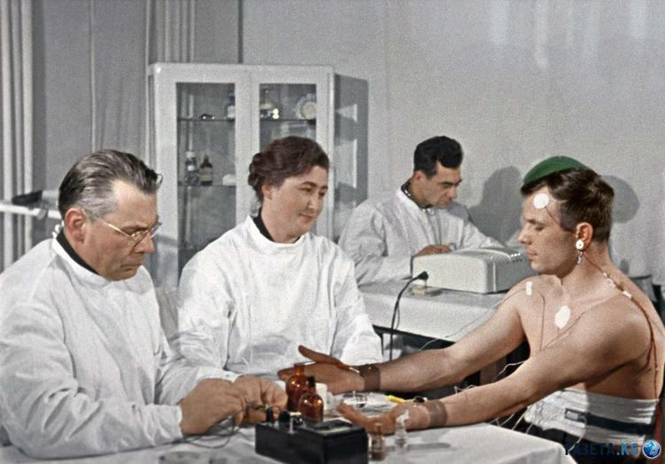
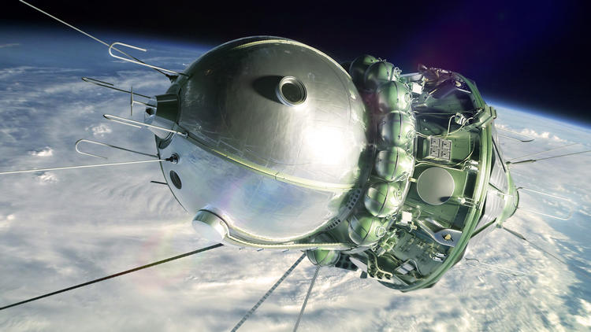

К отправке человека в космос ведущие советские специалисты готовились очень тщательно. Претенденты на роль первого космонавта (изначально их было 20) не являлись самыми лучшими асами, но в этом и не было необходимости — их отбирали по другим параметрам. Королёву, главному конструктору корабля-спутника «Восток-1» и пионеру практической космонавтики, требовался лётчик до тридцати лет, весом до семидесяти двух килограмм и ростом до ста семидесяти сантиметров, имеющий великолепное психофизическое здоровье.

Такие требования были продиктованы сложностью космических полётов и конструкцией кабины модуля «Восток-1» — в ней помещался только один человек с определёнными данными. Плюс ко всему было необходимо, чтобы космонавт был настоящим коммунистом, а не беспартийным.
При конструировании «Востока» было придумано несколько простых, но весьма эффективных решений, которые потом использовались и на других космических ракетах. Сделать некоторые вещи в срок не получилось, и, например, по этой причине было принято решение не вставлять сюда систему аварийного спасения при старте. Вдобавок ко всему из конструкции уже строящегося корабля удалили вторую тормозную систему, дублирующую первую. Отказ от неё обосновали тем, что «Востока-1», войдя на не слишком высокую орбиту (до 200 километров), всё равно в течение десяти суток слетел бы с неё из-за торможения о высшие атмосферные слои и возвратился бы обратно на нашу планету. И систем жизнеобеспечения на корабле-спутнике тоже хватало максимум на десять суток.

Сергей Королёв хотел как можно быстрее запустить в космическое пространство свой аппарат, ведь имелась информация, что Штаты планируют осуществить нечто аналогичное уже во второй половине апреля 1961 года. Сначала из 20 претендентов выбрали 6, а окончательное решение, кто именно должен лететь, приняли на одном из заседаний госкомиссии — была одобрена кандидатура Юрия Гагарина (дублёром назначили Германа Титова). А в качестве даты для запуска «Востока-1» было выбрано 12 апреля.